Bienvenido a este repositorio dedicado a recolectar diversos ejercicios para aprender a usar el framework CodeIgniter. Este repositorio está diseñado para ayudar a desarrolladores de todos los niveles a mejorar sus habilidades en CodeIgniter a través de ejemplos prácticos y ejercicios.
Este repositorio contiene una serie de ejercicios diseñados para enseñar los conceptos básicos y avanzados del framework CodeIgniter. Los ejercicios están organizados de manera progresiva para que puedas seguir aprendiendo paso a paso.
Clona este repositorio en tu máquina local:
git clone https://github.com/tu-usuario/tu-repositorio.git
Navega al directorio del proyecto:
A continuación se detallan los ejercicios disponibles en este repositorio:
Introducción a CodeIgniter: Descripción: Aprende los fundamentos de CodeIgniter, incluyendo la configuración inicial y la creación de tu primera aplicación. Video de referencia: Curso de CodeIgniter - Introducción Archivo de ejercicio: 01-introducción (Agrega más ejercicios conforme vayas avanzando en el curso y en otros materiales)
Este repositorio se basa en el siguiente curso de YouTube:
Curso de CodeIgniter - Introducci√≥n por Juan de la Torre Contribuciones ü§ù ¡Las contribuciones son bienvenidas! Si deseas contribuir, por favor sigue estos pasos:
Haz un fork del repositorio. Crea una rama con una descripci√≥n clara de tu mejora: bash Copiar c√≥digo git checkout -b mejora-descripci√≥n Realiza tus cambios y haz commits con mensajes descriptivos. Env√≠a un pull request detallando los cambios realizados. Licencia üìÑ Este proyecto está licenciado bajo la Licencia MIT. Consulta el archivo LICENSE para obtener más detalles.
¡Listo para usar! üöÄü뮂Äçüíª Si necesitas algo más, aqu√≠ estoy. üòä
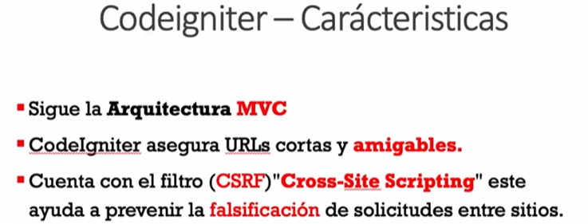
CodeIgniter es un framework de desarrollo web para PHP. üöÄ Está dise√±ado para desarrolladores que necesitan un conjunto de herramientas simple y elegante para crear aplicaciones web con todas las funcionalidades necesarias. Aqu√≠ tienes algunos puntos clave sobre CodeIgniter:
Ligero y Rápido: CodeIgniter es conocido por ser liviano, con un tama√±o m√≠nimo y una velocidad de ejecuci√≥n rápida. üåê‚ö°
MVC (Modelo-Vista-Controlador): Utiliza el patr√≥n de dise√±o MVC, lo que ayuda a separar la l√≥gica de negocio, la l√≥gica de presentaci√≥n y los datos. Esto hace que el c√≥digo sea más limpio y fácil de mantener. üìÇüîÑ
Configuraci√≥n M√≠nima: Una de sus grandes ventajas es que casi no requiere configuraci√≥n. Simplemente se descarga, se descomprime y ya se puede usar. üéâüõ†Ô∏è
Bibliotecas y Helpers: Incluye una amplia variedad de bibliotecas y helpers para tareas comunes, como la manipulaci√≥n de formularios, el manejo de sesiones, y la validaci√≥n de datos, entre otros. üìöüîß
Comunidad y Soporte: Tiene una gran comunidad de desarrolladores que contribuyen con m√≥dulos adicionales, plugins, y soporte. üåçü§ù
Documentaci√≥n Extensa: CodeIgniter tiene una documentaci√≥n muy completa y bien estructurada, lo cual es excelente para aprender y resolver dudas. üìñüí°
En resumen, CodeIgniter es una opci√≥n fantástica si buscas un framework de PHP que sea rápido, eficiente y fácil de usar. Si estás pensando en desarrollar una nueva aplicaci√≥n web, ¡vale la pena considerarlo! üöÄüíª
¿Hay algo más espec√≠fico que te gustar√≠a saber sobre CodeIgniter? ü§îüí¨
Para comenzar a desarrollar con CodeIgniter, necesitarás algunas herramientas básicas. Aquí tienes una lista con las más importantes:
Servidor Web: Necesitarás un servidor web que soporte PHP, como Apache o Nginx. Puedes instalar uno de los siguientes paquetes que incluyen todo lo necesario:
PHP: CodeIgniter requiere PHP. Asegúrate de tener instalada una versión compatible (PHP 7.2 o superior).
Base de Datos: CodeIgniter es compatible con varias bases de datos, pero la más común es MySQL.
Editor de Código o IDE: Utiliza un buen editor de código o un entorno de desarrollo integrado (IDE) para escribir y gestionar tu código.
Composer: Aunque CodeIgniter no requiere Composer, es útil para manejar dependencias y paquetes adicionales.
Control de Versiones: Usa un sistema de control de versiones para gestionar tu código, como Git.
CodeIgniter: Por último, necesitas descargar CodeIgniter.
htdocs para XAMPP).¡Listo! Ahora tienes todo lo necesario para empezar a programar en CodeIgniter. Si tienes alguna pregunta o necesitas más detalles, no dudes en preguntar. ¡Buena suerte con tu proyecto! ü뮂ÄçüíªüöÄ
PHP Intelephense:
PHP Debug:
PHP DocBlocker:
PHP Namespace Resolver:
CodeIgniter 4 Snippets:
Bracket Pair Colorizer:
EditorConfig for VS Code:
GitLens:
Sigue estos pasos para instalar CodeIgniter manualmente desde su repositorio oficial:
Asegúrate de tener lo siguiente instalado y configurado:
Abre una terminal o línea de comandos.
Navega al directorio donde deseas instalar CodeIgniter. Por ejemplo:
cd /path/to/your/webserver/root
Clona el repositorio de CodeIgniter. Puedes usar el siguiente comando para la versión 4:
git clone https://github.com/codeigniter4/CodeIgniter4.git
<VirtualHost \*:80>
ServerName your-site.local
DocumentRoot /path/to/your/webserver/root/CodeIgniter4/public
<Directory /path/to/your/webserver/root/CodeIgniter4/public>
AllowOverride All
Require all granted
</Directory>
</VirtualHost>
a2ensite your-site.conf
service apache2 restart
Abre tu navegador web y navega a la URL configurada (por ejemplo, http://your-site.local). Si todo está configurado correctamente, deberías ver la página de bienvenida de CodeIgniter.
¡Listo! Ahora tienes CodeIgniter instalado y configurado manualmente desde el repositorio. Si tienes alguna pregunta o necesitas más ayuda, no dudes en dec√≠rmelo. ¡Feliz programaci√≥n! ü뮂ÄçüíªüöÄ
La estructura de carpetas de CodeIgniter está diseñada para organizar y separar claramente los diferentes componentes de tu aplicación web. Aquí tienes una explicación de las carpetas principales y su propósito:
app: Esta es la carpeta principal de tu aplicación. Aquí es donde colocas la lógica específica de tu aplicación, como controladores, modelos, vistas y otros archivos relacionados.
Controllers: Aqu√≠ se encuentran los controladores de tu aplicaci√≥n. üéÆ Los controladores son responsables de manejar las solicitudes HTTP, procesar la l√≥gica de negocio y cargar las vistas.
Models: En esta carpeta se colocan los modelos de tu aplicaci√≥n. üì¶ Los modelos representan y manipulan los datos de tu aplicaci√≥n, interactuando con la base de datos u otros sistemas de almacenamiento.
Views: Aqu√≠ se almacenan las vistas de tu aplicaci√≥n. üëÄ Las vistas son archivos que contienen HTML y pueden incluir c√≥digo PHP para mostrar datos dinámicos.
Config: Contiene archivos de configuración para tu aplicación, como la configuración de la base de datos, rutas, y otros ajustes.
Routes: Aquí puedes definir las rutas de tu aplicación, especificando qué controlador y método manejará cada solicitud HTTP.
Helpers: Esta carpeta contiene archivos de ayuda que proporcionan funciones auxiliares reutilizables en toda tu aplicación.
Libraries: Aquí puedes colocar tus propias bibliotecas personalizadas, que pueden proporcionar funcionalidades adicionales a tu aplicación.
ThirdParty: Si utilizas bibliotecas de terceros que no están incluidas en CodeIgniter por defecto, puedes colocarlas aquí.
public: Esta carpeta es el punto de entrada público de tu aplicación y contiene los archivos accesibles desde la web.
index.php: Este es el archivo principal que se ejecuta cuando accedes a tu aplicación a través del navegador. Actúa como el controlador frontal de tu aplicación.
.htaccess: Este archivo proporciona reglas de reescritura de URL para que las URL amigables sean posibles y para mejorar la seguridad de tu aplicación.
system: Esta carpeta contiene los archivos del núcleo de CodeIgniter, que no debes modificar. Contiene las bibliotecas y los archivos base que hacen funcionar el framework.
core: Aquí se encuentran las clases principales del framework, como el controlador base y el modelo base.
database: Contiene los archivos relacionados con el manejo de la base de datos, como el driver de la base de datos y la clase de consulta.
helpers: Aquí se encuentran las funciones auxiliares del sistema que proporcionan funcionalidades comunes.
libraries: Contiene las bibliotecas del sistema que proporcionan funcionalidades adicionales, como el manejo de sesiones y el envío de correo electrónico.
Config: Contiene los archivos de configuración del sistema, como la configuración de enrutamiento y la configuración de la base de datos.
writable: Esta carpeta es donde CodeIgniter almacena temporalmente archivos generados dinámicamente, como archivos de caché, sesiones de usuario y registros de errores.
cache: Aquí se almacenan los archivos de caché generados por CodeIgniter para mejorar el rendimiento de la aplicación.
logs: Contiene los archivos de registro de errores generados por CodeIgniter.
Este es un ejemplo de la estructura
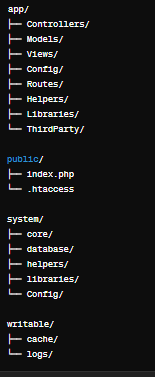

El archivo .env es un archivo de configuración utilizado en CodeIgniter para definir variables de entorno y ajustes específicos de la aplicación. Contiene información sensible y parámetros que pueden variar entre entornos, como configuraciones de la base de datos, claves de cifrado y otras variables de configuración.
Para activar el archivo .env en tu aplicación CodeIgniter, debes asegurarte de que el paquete vlucas/phpdotenv esté instalado. Puedes instalarlo utilizando Composer ejecutando el siguiente comando en tu terminal:
composer require vlucas/phpdotenv
Una vez instalado, debes cargar y cargar las variables de entorno del archivo .env en tu aplicación. Esto generalmente se hace en el archivo index.php ubicado en el directorio public de tu aplicación, añadiendo las siguientes líneas al principio del archivo:
<?php
// Carga la librería dotenv
$dotenv = Dotenv\Dotenv::createImmutable(__DIR__ . '/../');
$dotenv->load();
El archivo .env contiene variables de entorno en el formato NOMBRE=VALOR. Aquí hay algunos ejemplos de configuraciones comunes que puedes encontrar en este archivo:
Este archivo esta incluido en git ignore por defecto
Proporciona utilidades para la gestión de la aplicación, incluyendo la instalación de componentes, ejecución de migraciones de bases de datos, generación de claves de cifrado, limpieza de caché y verificación de requisitos del sistema.
# Instalación de Componentes
spark install <nombre-componente>
# Ejecución de Migraciones de Bases de Datos
spark migrate
# Generación de Claves de Cifrado
spark key:generate
# Limpiar Caché y Archivos Temporales
spark clean
# Verificar Requisitos del Sistema
spark doctor
El archivo app.php es uno de los archivos de configuración clave en una aplicación de CodeIgniter 4. Contiene varias configuraciones importantes para tu aplicación. A continuación, se describen algunas de las configuraciones más relevantes:

remplazar por la dirección de tu carpeta public

defaultLocale: Idioma local de tu aplicación Los idiomas se almacenan en app/Language algunos requieren instalación
indexPage: Especifica el nombre del archivo de entrada en las URL generadas por CodeIgniter.
uriProtocol: Define el método que CodeIgniter usará para determinar la URI de la solicitud.
timezone: Configura la zona horaria predeterminada para tu aplicación.
app.baseURL: Alternativa para configurar la URL base de la aplicación.
app.salt: Se utiliza para cifrar cookies y otras cadenas sensibles en tu aplicación.
app.CSRFTokenName y app.CSRFHeaderName: Define el nombre del token CSRF y el nombre del encabezado HTTP donde se enviará el token CSRF.
app.publicFilters: Permite especificar qué filtros de autorización se aplicarán a todas las rutas de tu aplicación de forma global.
Estas son algunas de las configuraciones más comunes que puedes encontrar en el archivo app.php. Es importante revisar este archivo y ajustar las configuraciones según las necesidades específicas de tu aplicación. ¡Recuerda siempre mantener seguro este archivo y no incluir información sensible en él!
El archivo Database.php es otro archivo de configuración importante en una aplicación de CodeIgniter 4. Se encuentra en el directorio app/Config y se utiliza para configurar la conexión a la base de datos y otros ajustes relacionados con la base de datos. A continuación, se describen algunas de las configuraciones más relevantes que puedes encontrar en este archivo:
Estas son algunas de las configuraciones más comunes que puedes encontrar en el archivo Database.php. Es importante revisar este archivo y ajustar las configuraciones según las necesidades específicas de tu aplicación y tu entorno de base de datos. ¡Asegúrate de mantener seguras las credenciales de tu base de datos y de no incluirlas en el control de versiones!
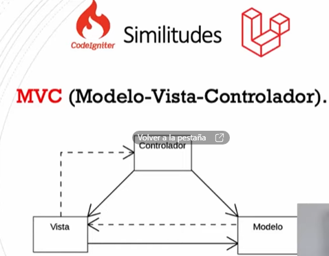
MVC es un patr√≥n de dise√±o de software que separa una aplicaci√≥n en tres componentes principales: Modelo, Vista y Controlador. Esta separaci√≥n facilita la gesti√≥n del c√≥digo y mejora la Escalabilidad y el mantenimiento de la aplicaci√≥n. Vamos a ver cada componente en detalle. üîç
Modelo (Model) üóÉÔ∏è
Vista (View) üëÄ
Controlador (Controller) üéÆ
Flujo de MVC
+---------------+
| Usuario |
+-------+-------+
|
v
+-------+-------+
| Vista |
+-------+-------+
|
v
+-------+-------+
| Controlador |
+-------+-------+
|
v
+-------+-------+
| Modelo |
+-------+-------+
|
v
+-------+-------+
| Datos |
+---------------+
Usuario Interactúa con la Vista:
Vista Envía la Solicitud al Controlador:
Controlador Procesa la Solicitud:
Modelo Actualiza los Datos:
Modelo Notifica a la Vista:
Vista se Actualiza:
+---------------+ 1. Interacción del usuario +---------------+
| Usuario | ----------------------------------> | Vista |
+---------------+ +---------------+
^ |
| v
| 2. Solicitud del usuario
| a través de la vista
| |
| v
+---------------+ +---------------+
| Controlador| <--------------------------------- | Vista |
+---------------+ 3. Envío de solicitud +---------------+
| |
| v
| 4. Interacción con el modelo para obtener |
| o modificar datos |
| v
+---------------+ +---------------+
| Modelo | <--------------------------------- | Controlador |
+---------------+ 5. Envío de datos +---------------+
| |
| v
| 6. Actualización de la vista con los datos |
| obtenidos/modificados |
| v
+---------------+ +---------------+
| Datos | | Vista |
+---------------+ +---------------+
^
|
+---------------+
| Usuario |
+---------------+
Frameworks:
Librerías/Frameworks Frontend:
En CodeIgniter 4, los controladores siguen siendo una parte esencial del patrón de diseño MVC (Modelo-Vista-Controlador). Sin embargo, hay algunas mejoras y cambios significativos en comparación con las versiones anteriores. Los controladores en CodeIgniter 4 actúan como intermediarios entre los modelos, las vistas y cualquier otra clase de procesamiento.
<?php
// Definimos el namespace para la clase. En este caso, la clase MiControlador pertenece al namespace App\Controllers.
namespace App\Controllers;
// Importamos la clase Controller de CodeIgniter para que nuestra clase MiControlador pueda extenderla.
use CodeIgniter\Controller;
// Definimos la clase MiControlador y la hacemos extender de la clase Controller de CodeIgniter.
class MiControlador extends Controller {
// Definimos el método index, que será la acción por defecto del controlador.
public function index() {
// Retornamos un saludo simple.
return "¡Hola, mundo!";
}
}
Las funciones (también llamadas métodos) dentro de un controlador se corresponden con las acciones que el controlador puede realizar.
public function mostrarMensaje() {
return "Este es un mensaje desde el controlador.";
}
Para acceder a esta función, irías a http://tusitio.com/miControlador/mostrarMensaje.
Para cargar una vista desde un controlador, utiliza el método return view.
public function mostrarVista() {
return view('mi_vista');
}
Puedes pasar datos a la vista usando un array asociativo.
// Definimos un método público llamado mostrarVistaConDatos en nuestra clase.
public function mostrarVistaConDatos() {
// Creamos un array asociativo llamado $data que contiene los datos que queremos pasar a la vista.
$data = [
'titulo' => 'Título de la página', // Definimos una variable 'titulo' con el valor 'Título de la página'.
'mensaje' => 'Mensaje para la vista' // Definimos una variable 'mensaje' con el valor 'Mensaje para la vista'.
];
// Utilizamos la función view() para cargar la vista 'mi_vista' y pasamos el array $data como segundo parámetro.
// Esto permite que los datos estén disponibles en la vista para su uso.
return view('mi_vista', $data);
}
En la vista, puedes acceder a estos datos como variables.
<html>
<head>
<title><?= $titulo ?></title>
</head>
<body>
<p><?= $mensaje ?></p>
</body>
</html>
// Importamos el modelo MiModelo ubicado en el namespace App\Models.
use App\Models\MiModelo;
// Definimos el constructor de la clase.
public function __construct() {
// En el constructor, creamos una instancia del modelo MiModelo y la asignamos a la propiedad $miModelo.
$this->miModelo = new MiModelo();
}
// Definimos un método público llamado usarModelo en nuestra clase.
public function usarModelo() {
// Llamamos al método obtenerDatos() del modelo MiModelo para obtener los datos que queremos utilizar en la vista.
$datos = $this->miModelo->obtenerDatos();
// Utilizamos la función view() para cargar la vista 'vista_datos' y pasamos los datos obtenidos del modelo como un array asociativo.
return view('vista_datos', ['datos' => $datos]);
}
Para redireccionar desde un controlador, usa el helper redirect.
// Definimos un método público llamado redireccionar en nuestra clase.
public function redireccionar() {
// Utilizamos el helper redirect() para generar una redirección en CodeIgniter.
// La función to() especifica la URL a la que se redireccionará.
return redirect()->to('/otraControlador/otraFuncion');
}
CodeIgniter 4 facilita la creación de APIs RESTful. Puedes extender la clase CodeIgniter\RESTful\ResourceController.
// Definimos el namespace para la clase. En este caso, la clase MiApi pertenece al namespace App\Controllers.
namespace App\Controllers;
// Importamos la clase ResourceController de CodeIgniter para que nuestra clase MiApi pueda extenderla.
use CodeIgniter\RESTful\ResourceController;
// Definimos la clase MiApi y la hacemos extender de la clase ResourceController de CodeIgniter.
class MiApi extends ResourceController {
// Definimos el método index, que será la acción por defecto del controlador para la API.
public function index() {
// Retornamos una respuesta JSON con un mensaje simple.
return $this->respond(['mensaje' => 'Hola desde la API']);
}
}
Los controladores en CodeIgniter 4 han evolucionado para ser más robustos y flexibles, facilitando el desarrollo de aplicaciones modernas y escalables. Al comprender y utilizar estos conceptos, puedes maximizar el potencial de CodeIgniter 4 en tus proyectos. üöÄ‚ú®
// Definimos el namespace para la clase. En este caso, la clase Home pertenece al namespace App\Controllers.
namespace App\Controllers;
// Importamos la clase BaseController para que nuestra clase Home pueda extenderla.
use App\Controllers\BaseController;
// Definimos la clase Home y la hacemos extender de la clase BaseController.
class Home extends BaseController
{
// Definimos el método index, que será la acción por defecto del controlador para la página de inicio.
// Se especifica que el método devuelve una cadena de texto.
public function index(): string
{
// Retornamos la vista 'welcome_message'.
return view('welcome_message');
}
}
La clase BaseController es una clase base proporcionada por CodeIgniter que ofrece un lugar conveniente para cargar componentes y realizar funciones que son necesarias en todos tus controladores. Aquí tienes una explicación detallada de cada parte de esta clase:
Namespace: La clase BaseController está definida en el namespace App\Controllers, lo que significa que pertenece al directorio app/Controllers de tu aplicación.
Importaciones: La clase BaseController importa varias clases y interfaces de CodeIgniter y del estándar PSR-3 para manejo de registros de logs. Estas importaciones permiten el uso de clases y herramientas necesarias para la construcción de controladores.
Comentarios de Documentación: La clase BaseController incluye comentarios de documentación que describen su propósito y su uso. Estos comentarios son útiles para entender rápidamente la función y la forma de utilizar la clase.
Clase Abstracta: La clase BaseController es abstracta, lo que significa que no puede ser instanciada directamente. Debe ser extendida por otras clases para ser utilizada.
Propiedad $request: Esta propiedad representa la instancia del objeto Request principal que se utiliza para manejar la solicitud HTTP. Puede ser una instancia de CLIRequest para solicitudes de línea de comandos o IncomingRequest para solicitudes HTTP entrantes.
Propiedad $helpers: Esta propiedad es un array que contiene los nombres de los helpers que se cargarán automáticamente al instanciar una clase que extienda BaseController. Los helpers proporcionan funciones útiles que pueden ser utilizadas en los controladores.
Método initController(): Este método es llamado automáticamente por CodeIgniter después de instanciar un controlador. Se encarga de inicializar el controlador y establecer los objetos necesarios como el Request, Response y Logger. Puedes agregar lógica adicional en este método para pre-cargar modelos, librerías, etc.
La clase BaseController es una clase base fundamental en CodeIgniter que proporciona funcionalidades comunes y configuraciones básicas para todos los controladores de tu aplicación. Al extender esta clase en tus controladores, puedes aprovechar estas funcionalidades sin necesidad de repetir código en cada controlador individualmente.
Este es el archivo en español
<?php
namespace App\Controllers;
use CodeIgniter\Controller;
use CodeIgniter\HTTP\CLIRequest;
use CodeIgniter\HTTP\IncomingRequest;
use CodeIgniter\HTTP\RequestInterface;
use CodeIgniter\HTTP\ResponseInterface;
use Psr\Log\LoggerInterface;
/**
* Clase BaseController
*
* BaseController proporciona un lugar conveniente para cargar componentes
* y realizar funciones que son necesarias para todos tus controladores.
* Extiende esta clase en cualquier controlador nuevo:
* class Home extends BaseController
*
* Por seguridad, asegúrate de declarar cualquier método nuevo como protegido o privado.
*/
abstract class BaseController extends Controller
{
/**
* Instancia del objeto de solicitud principal.
*
* @var CLIRequest|IncomingRequest
*/
protected $request;
/**
* Un array de helpers para ser cargados automáticamente al
* instanciar la clase. Estos helpers estarán disponibles
* para todos los demás controladores que extiendan BaseController.
*
* @var list<string>
*/
protected $helpers = [];
/**
* Asegúrate de declarar propiedades para cualquier propiedad que inicialices.
* La creación de propiedades dinámicas está obsoleta en PHP 8.2.
*/
// protected $session;
/**
* @return void
*/
public function initController(RequestInterface $request, ResponseInterface $response, LoggerInterface $logger)
{
// No Edites Esta Línea
parent::initController($request, $response, $logger);
// Precarga cualquier modelo, biblioteca, etc., aquí.
// Ejemplo: $this->session = \Config\Services::session();
}
}
El controlador prácticamente es el que decide que se tiene que hacer según una url o rutas
En CodeIgniter 4, el enrutamiento se define en el archivo Routes.php en el directorio app/Config.
<?php
namespace Config;
use CodeIgniter\Routing\RouteCollectionInterface;
use CodeIgniter\Routing\Router;
// Crear una nueva instancia del enrutador de CodeIgniter
$routes = new Router();
// Definir el controlador predeterminado que se cargará si no se proporciona ninguna URI
$routes->setDefaultController('Inicio');
// Definir una ruta para la página de inicio, donde '/' representa la raíz del sitio web
$routes->get('/', 'Inicio::index');
// Definir una ruta para mostrar un usuario específico, donde 'usuarios/(:num)' captura un número como parámetro
// y lo pasa al método 'mostrar' del controlador 'Usuarios'
$routes->get('usuarios/(:num)', 'Usuarios::mostrar/$1');
// Definir un grupo de rutas para el panel de administración, que tendrá un prefijo 'admin' para todas las rutas dentro del grupo
$routes->group('admin', function (RouteCollectionInterface $routes) {
// Agregar una ruta para el dashboard del panel de administración
$routes->add('dashboard', 'Admin::dashboard');
// Agregar una ruta para la gestión de usuarios dentro del panel de administración
$routes->add('usuarios', 'Admin::usuarios');
});
// Configurar una redirección desde una URL antigua a una nueva
$routes->redirect('old-url', 'new-url');
Método HTTP: Las rutas en CodeIgniter 4 comienzan generalmente con un método HTTP, como get, post, put, delete, etc. Este método especifica el tipo de solicitud HTTP que coincide con la ruta.
Ejemplo:
$routes->get('/', 'Inicio::index');
Aquí, get indica que esta ruta se activará cuando se reciba una solicitud GET a la raíz del sitio web (/).
URI (Identificador Uniforme de Recurso): Es la parte de la URL después del nombre de dominio. Puede contener segmentos de la URL que se deben coincidir para que se active la ruta.
Ejemplo:
$routes->get('usuarios/(:num)', 'Usuarios::mostrar/$1');
En esta ruta, /usuarios/(:num) especifica que la ruta se activará cuando la URL coincida con /usuarios/ seguido de un número.
Ejemplo:
'Usuarios::mostrar/$1'
Aquí, Usuarios es el nombre del controlador y mostrar es el nombre del método dentro del controlador que manejará la solicitud. $1 es un marcador de posición para el primer parámetro capturado en la URI.
En CodeIgniter, el enrutamiento automático es el enfoque predeterminado que sigue una convención de nomenclatura para dirigir las solicitudes HTTP a los controladores y métodos correspondientes.
Convención de Nomenclatura: Para el enrutamiento automático, CodeIgniter asume que la primera parte de la URL (después del dominio) corresponde al nombre del controlador, y la segunda parte (si existe) corresponde al nombre del método dentro de ese controlador. Por ejemplo:
http://ejemplo.com/controlador/metodo/parametros
Controladores y Métodos: Los controladores deben ubicarse en el directorio app/Controllers, y los métodos dentro de estos controladores deben ser públicos y accesibles.
El enrutamiento manual te permite definir rutas personalizadas en el archivo Routes.php para dirigir las solicitudes a controladores y métodos específicos según tus necesidades.
Archivo Routes.php: En CodeIgniter, el archivo Routes.php ubicado en app/Config es donde defines tus rutas manualmente.
Método add(): Utilizas el método add() del enrutador para definir tus rutas. Puedes especificar la URI y el controlador/método correspondiente para cada ruta.
$routes->get('ruta', 'Controlador::metodo');
Flexibilidad: El enrutamiento manual te brinda más flexibilidad para definir reglas de enrutamiento personalizadas, incluidos prefijos, restricciones de parámetros, grupos de rutas y redireccionamientos.
Enrutamiento Automático: Es útil cuando sigues la convención de nomenclatura predeterminada y no necesitas reglas de enrutamiento personalizadas.
Enrutamiento Manual: Se utiliza cuando necesitas reglas de enrutamiento personalizadas, como redireccionamientos, rutas con parámetros dinámicos, o cuando deseas agrupar y organizar tus rutas de una manera específica.
setDefaultNamespace($value): Este método se utiliza para establecer el espacio de nombres predeterminado para los controladores.
setDefaultController($controller): Se utiliza para establecer el controlador predeterminado que se cargará si no se proporciona ninguna URI.
setDefaultMethod($method): Define el método predeterminado que se ejecutará si no se proporciona un método en la URI.
setTranslateURIDashes($translate): Con este método, puedes habilitar o deshabilitar la traducción automática de guiones en las URIs a nombres de controlador y método.
set404Override($override): Con esta función, puedes habilitar o deshabilitar la anulación de la página 404 predeterminada de CodeIgniter.
setAutoRoute($value): Este método permite habilitar o deshabilitar el enrutamiento automático. Cuando está habilitado, CodeIgniter intentará enrutamiento automático según la URI proporcionada.
Estos métodos te proporcionan control sobre el enrutamiento automático en CodeIgniter, permitiéndote configurar el comportamiento predeterminado de tu aplicación web.


Función con parámetros

Ruta
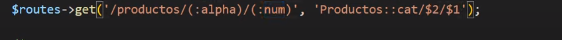
Controlador

Se puede hacer limitando el rango del valor de los parámetros en este caso limitamos solo dígitos del 0 al 9 y que mínimo tengan 2 cifras

Rutas hacia una vista

En este caso llamamos a una vista y le pasamos parámetros
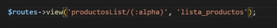
Desde la cista lo podemos recibir de esta manera
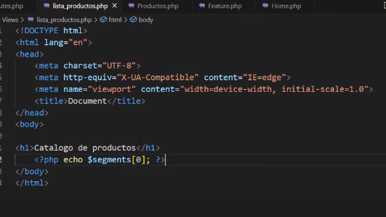
Se pueden hacer Grupos de Rutas
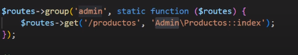
¿Qué son las vistas en CodeIgniter 4? Las vistas son componentes esenciales que se utilizan para presentar datos al usuario final de una aplicación web en el patrón de diseño Modelo-Vista-Controlador (MVC). Permiten la separación de la lógica de presentación de la lógica de negocio y la manipulación de datos.
¿Cómo se usan las vistas en CodeIgniter 4?
Creación de vistas: Se crean como archivos individuales con la extensión .php en el directorio app/Views.
Pasando datos a las vistas: Los controladores pueden pasar datos a las vistas utilizando un arreglo asociativo o un objeto como parámetro al cargar la vista.
Cargando vistas: Se cargan desde los controladores utilizando el método view() proporcionado por la clase CodeIgniter\View\View.

si tu vista esta en una subcarpeta es necesario especificarla

Automáticamente la función busca dentro de nuestra carpeta de vistas
renderSection().¿Qué se puede hacer con las vistas en CodeIgniter 4?
En el controlador

En la Vista
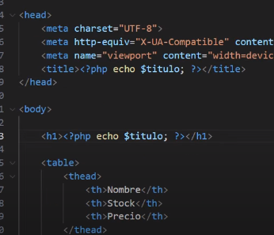
Se puede recibir e imprimir con un echo para que se respeten las etiquetas html
Y también se puede pasar como texto plano esto con la función esc()
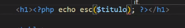 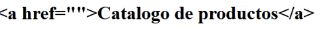
Desde el controlador podemos mandar a llamar mas de una vista y de diferentes maneras ya sea con echo

o con return

En CodeIgniter, un layout es una estructura base para las vistas de tu aplicación web. Los layouts permiten definir una plantilla común que puede ser reutilizada en diferentes vistas, asegurando consistencia en el diseño y facilitando el mantenimiento del código.
Generalmente, creas una vista principal que contiene la estructura básica de tu página, como la cabecera, pie de página y secciones comunes. Puedes llamarla layout.php y colocarla en la carpeta de vistas (application/views/).
<!-- application/views/layout.php -->
<!DOCTYPE html>
<html lang="en">
<head>
<meta charset="UTF-8" />
<title><?= $title; ?></title>
<!-- Incluye tus archivos CSS aquí -->
</head>
<body>
<header>
<h1>Mi Aplicación Web</h1>
<!-- Menú de navegación, etc. -->
</header>
<main>
<?= $content; ?>
</main>
<footer>
<p>© 2024 Mi Aplicaci√≥n Web</p>
</footer>
<!-- Incluye tus archivos JavaScript aquí -->
</body>
</html>
En tu controlador, cargas las vistas específicas y las pasas a través del layout.
// app/Controllers/Home.php
namespace App\Controllers;
class Home extends BaseController {
public function index() {
$data['title'] = 'Bienvenido a CodeIgniter 4';
return view('home', $data);
}
}
Crea las vistas específicas que deseas mostrar dentro del layout. Por ejemplo, home.php.
<!-- app/Views/home.php -->
<?= $this->extend('layout'); ?>
<?= $this->section('content'); ?>
<h2>¡Hola, mundo!</h2>
<p>Bienvenido a mi aplicación web construida con CodeIgniter 4.</p>
<?= $this->endSection(); ?>

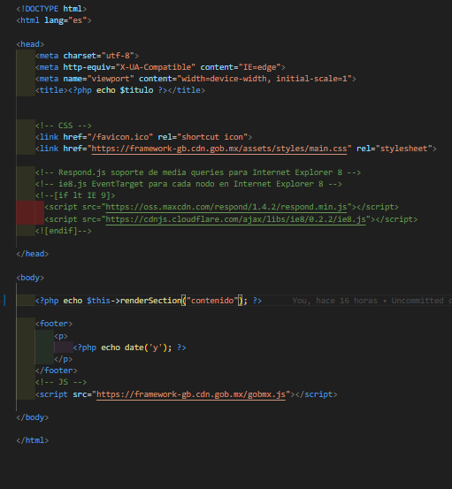
Esta es una estructura básica de una plantilla html
en la cual imprimimos con echo una sección para renderizar llamada contenido

este layout lo vamos a llamar desde una vista con

Y vamos a crear la sección de codigo que vamos a enviar como contenido de nuestra layout

Dentro del controlador retornamos la vista


Lo primero es configurar nuestras credenciales de acceso en el archivo .env que se sobre escribe a los demás archivos de configuración
El siguiente paso es crear una variable para almacenar las credenciales de conexión

en otra variable guardamos la query o consulta

<?php
// Definimos el namespace de la clase para mantener el código organizado y evitar conflictos de nombres.
namespace App\Controllers;
// Definimos la clase Productos que extiende de BaseController, la clase base para los controladores en CodeIgniter.
class Productos extends BaseController
{
// Método index, que se ejecuta cuando se accede al controlador sin especificar un método.
public function index()
{
// Conectamos a la base de datos usando la configuración predeterminada.
$db = \Config\Database::connect();
// Ejecutamos una consulta SQL para seleccionar el código, nombre y stock de la tabla productos.
$query = $db->query("SELECT codigo, nombre, stock FROM productos");
// Obtenemos los resultados de la consulta en forma de un array de objetos.
$resultado = $query->getResult();
// Preparamos un array asociativo con datos para pasarlos a la vista.
$data = ['titulo' => 'Catálogo de Productos', 'productos' => $resultado];
// Cargamos la vista 'productos/index' y le pasamos los datos.
return view('productos/index', $data);
}
}
en la vista podemos utilizar los lops valores retornados de la siguiente manera
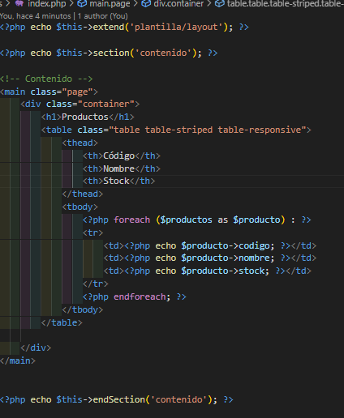
el resultado también puede ser retornado como un arreglo
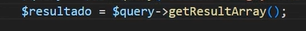
si es de esta manera en tu vista tienes que utilizar indices para consultar los datos del resultado retornado como arreglo


Los Modelos en CodeIgniter 4 son componentes que manejan la lógica de acceso a datos y la interacción con la base de datos. Son responsables de realizar operaciones como crear, leer, actualizar y eliminar (CRUD) registros en la base de datos.
Para crear un modelo en CodeIgniter 4, necesitas crear una clase que extienda CodeIgniter\Model. Aquí hay un ejemplo:
<?php
namespace App\Models;
use CodeIgniter\Model;
class UsuarioModel extends Model
{
protected $table = 'usuarios';
protected $primaryKey = 'id';
protected $allowedFields = ['nombre', 'email', 'contraseña'];
}
Para usar un modelo en tu controlador, primero necesitas cargarlo. Aquí hay un ejemplo de cómo hacerlo:
<?php
namespace App\Controllers;
use App\Models\UsuarioModel;
class UsuarioController extends BaseController
{
public function index()
{
$usuarioModel = new UsuarioModel();
$data['usuarios'] = $usuarioModel->findAll();
return view('usuarios/index', $data);
}
}
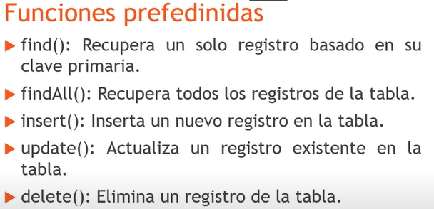
$usuarioModel = new UsuarioModel();
$usuarios = $usuarioModel->findAll();
$usuarioModel = new UsuarioModel();
$usuario = $usuarioModel->find(1);
$usuarioModel = new UsuarioModel();
$usuarioModel->insert([
'nombre' => 'Juan Pérez',
'email' => 'juan@example.com',
'contraseña' => '123456'
]);
$usuarioModel = new UsuarioModel();
$usuarioModel->update(1, [
'nombre' => 'Juan Pérez',
'email' => 'juan.perez@example.com'
]);
$usuarioModel = new UsuarioModel();
$usuarioModel->delete(1);
Puedes configurar reglas de validación en tu modelo:
<?php
namespace App\Models;
use CodeIgniter\Model;
class UsuarioModel extends Model
{
protected $table = 'usuarios';
protected $primaryKey = 'id';
protected $allowedFields = ['nombre', 'email', 'contraseña'];
protected $validationRules = [
'nombre' => 'required|min_length[3]|max_length[255]',
'email' => 'required|valid_email',
'contraseña' => 'required|min_length[8]'
];
}
Puedes usar callbacks para ejecutar funciones antes o después de ciertas operaciones:
<?php
namespace App\Models;
use CodeIgniter\Model;
class UsuarioModel extends Model
{
protected $table = 'usuarios';
protected $primaryKey = 'id';
protected $allowedFields = ['nombre', 'email', 'contraseña'];
protected $beforeInsert = ['hashPassword'];
protected function hashPassword(array $data)
{
if (isset($data['data']['contraseña'])) {
$data['data']['contraseña'] = password_hash($data['data']['contraseña'], PASSWORD_DEFAULT);
}
return $data;
}
}
Los modelos en CodeIgniter 4 son una poderosa herramienta para manejar la lógica de acceso a datos de tu aplicación. Organizan y simplifican la interacción con la base de datos, permitiendo un código más limpio y mantenible.
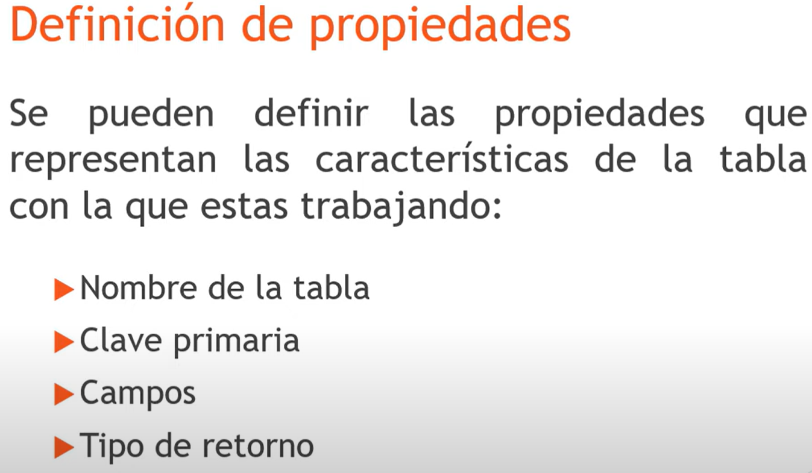
<?php
// Definimos el espacio de nombres para esta clase, que está dentro de la carpeta App\Models
namespace App\Models;
// Importamos la clase Model de CodeIgniter para poder extenderla
use CodeIgniter\Model;
class ProductosModel extends Model
{
// Nombre de la tabla en la base de datos que este modelo manejará
protected $table = 'productos';
// Nombre de la columna que es la llave primaria de la tabla
protected $primaryKey = 'idproductos';
// Indicamos que la llave primaria utiliza auto-incremento
protected $useAutoIncrement = true;
// Especificamos que los resultados serán devueltos como un arreglo; se podría usar 'object' para objetos
protected $returnType = 'array';
// Habilitamos el uso de soft deletes (borrado lógico) en este modelo
protected $useSoftDeletes = true;
// Campos permitidos para inserción y actualización
protected $allowedFields = ['codigo', 'nombre', 'stock', 'id_almacen', 'estatus'];
// Habilitamos el manejo automático de timestamps
protected $useTimestamps = true;
// Formato de las fechas que se manejarán
protected $dateFormat = 'datetime';
// Nombre de la columna que almacenará la fecha de creación
protected $createdField = 'fecha_alta';
// Nombre de la columna que almacenará la fecha de la última modificación
protected $updatedField = 'fecha_modifica';
// Nombre de la columna que almacenará la fecha de borrado lógico
protected $deletedField = 'fecha_elimina';
}
Anteriormente se mostró como conectar a la base de datos desde el controlador
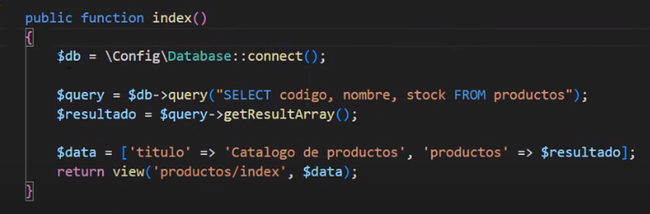
Usando un modelo, ya no es necesario realizar la conexión de la misma manera ya que el framework la hace a través de métodos que se utilizan al usar un modelo
el primer paso es instanciar el modelo desde cualquier función del controlador

no olvides importar la carpeta contenedora del modelo junto con el modelo para no importar todo
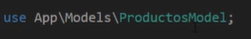
Se recomienda instanciar al modelo desde el constructor de el controller

para poder invocar los métodos o funciones de un modelo desde cualquier función de la clase o controlador

La función findAll() es parte de la clase Model en CodeIgniter 4 y se utiliza para recuperar todos los registros de una tabla, o un subconjunto de registros especificando un límite y un offset.
después de instanciar el modelo existe la función findAll(); Esta función contiene un select \ sin ningún where
 =>
=> 
si la información que nos retorna es de tipo array hay que meter ese arreglo en una variable

Aquí se puede ver como se configuro para recibir un arreglo desde el modelo
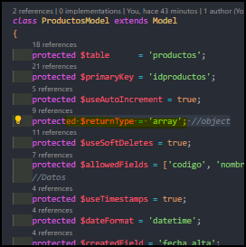
para obtener la informacion en la vista hay que iterar con un foreach
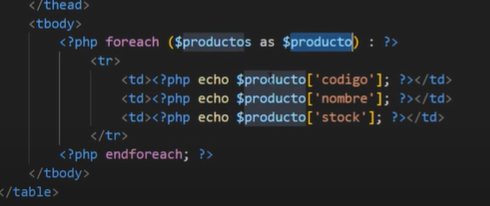
Otro ejemplo
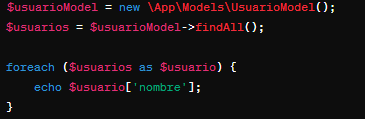
Con limite y offset

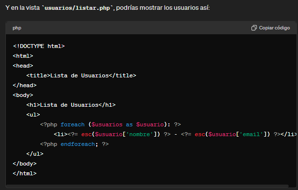
Notas Adicionales
La función find() busca un registro en la base de datos basado en su clave primaria. Es decir, debes pasar el valor de la clave primaria del registro que deseas recuperar como argumento de la función
Ejemplo
Modelo

Funcion llamada desde el controlador
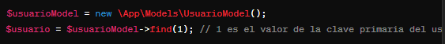
Sirve para traer un solo registro pide como parámetro un id y devuelve el id del registro consultado
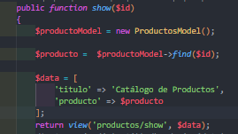
en la vista lo estarias imprimiendo de esta manera
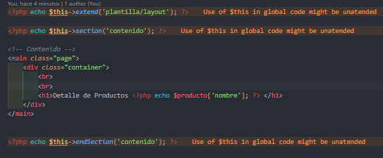
Tambien se puede pedir un arreglo de valores por ejemplo
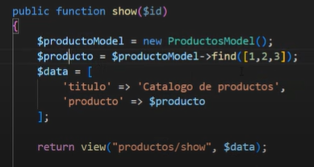
de esta manera se tiene que actualizar la forma en la que se va a imprimir
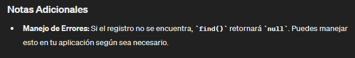
Sirve para insertar valores en una tabla es un metodo propio del modelo y si lo imprimes con un echo te retorna un 1 como valor booleano el cual representa que el insert se realizo correctamente

se le manda como parametro un arreglo con los valores que se desaen insertar en la tabla es necesario que estos cumplan con el tipo de vaslores que requiere la tabla en cada registro

ademas de el arreglo con los valores puedes ponerle false o true para poder obtener tambien el id de lo que insertaste en la tabla. Por ejemplo

Resultado en pantalla por el echo
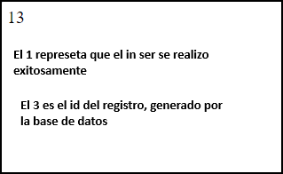
Otra forma de obtener el ultimo ID insertado es con la funcion getInsertId()
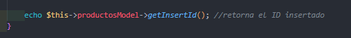
En CodeIgniter 4, la función update es fundamental para modificar registros en la base de datos.

Notas Importantes Protección de Campos: Asegúrate de que los campos que estás actualizando están en la propiedad allowedFields del modelo. Esto ayuda a prevenir ataques de inyección SQL.
Retorno de la Función: La función update retorna true en caso de éxito y false en caso de error.
Lo primero es crear un arreglo con la información que vas a cambiar
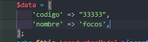
Después declaras tu Funcion y como parámetro le mandas el arreglo y el id del registro que vas a modificar
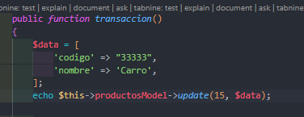
Tambien se pueden cambiar varios registros a la vez con un arreglo en la parte donde va el id
ejemplo

Para eliminar un registro de una base de datos es necesario ser consiente de que existe una opción en el modelo que te permite controlar si al borrar un registro se borra definitivamente o solo se deja de cargar. Esta configuración es

si se tiene como True no elimina el registro si se tiene como False si elimina el registro
la función solo requiere que se le pase el id del registro que queremos eliminar
De esta manerta si tu tienes un campo llamado fecha_elimina en tu tabla el registro no se eliminará sino que esa fecha de eliminacion se actualizara

Si useSoftDeletes lo cambiamos a false el registro sera eliminado

de esta manera si se borra el registro
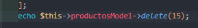

de igual manera esto puede funcionar con un arreglo con diferentes ids

al final de cuentas si tu realizas una consulta con findAll() Solo obtendras los registros que no tengan fecha de eliminacion, y los registros existentes
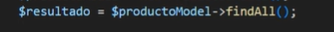
Para obtener todos los registros estén con fecha de eliminación o no debes de usar una función extra

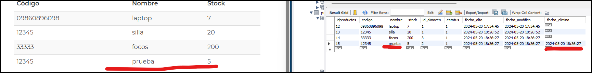
De esta manera se traen todos los registros aunque tengan fecha de eliminación
Esta función sirve para eliminar definitivamente los registros que se hayas dado de baja.

Ejemplo;
Antes

Después de llamar a la función
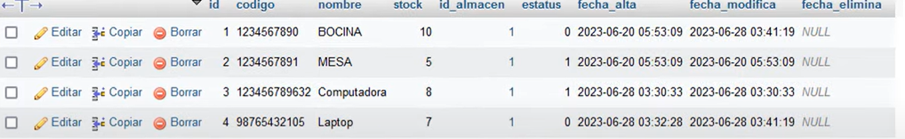
Pero es necesario tener activa la opción de useSoftDeletes
En CodeIgniter 4, la Query Builder Class es una herramienta poderosa que facilita la construcción y ejecución de consultas SQL de manera programática y segura. Esta clase te permite interactuar con la base de datos sin necesidad de escribir directamente las consultas SQL, lo cual reduce errores y mejora la seguridad contra inyecciones SQL. Aquí te dejo un resumen de sus características principales:
SELECT, INSERT, UPDATE y DELETE de forma sencilla y legible.// Conecta con la base de datos utilizando la configuración por defecto
$db = \Config\Database::connect();
// Obtiene el constructor de consultas para la tabla 'users'
$builder = $db->table('users');
// Construye una consulta SELECT para obtener los campos 'id', 'name' y 'email' de la tabla 'users'
// Añade una condición WHERE para seleccionar solo los registros donde el 'status' sea 'active'
// Ordena los resultados por el campo 'name' en orden ascendente
$query = $builder->select('id, name, email')
->where('status', 'active')
->orderBy('name', 'ASC')
->get();
// Ejecuta la consulta y obtiene los resultados como un array de objetos
$results = $query->getResult();
$data = [
'name' => 'John Doe',
'email' => 'john.doe@example.com',
'status' => 'active'
];
$builder->insert($data);
$data = [
'status' => 'inactive'
];
$builder->where('id', 1)
->update($data);
$builder->where('id', 1)
->delete();
La Query Builder Class en CodeIgniter 4 es esencial para trabajar con bases de datos de manera eficiente y segura, permitiendo a los desarrolladores centrarse más en la lógica de negocio y menos en los detalles técnicos de SQL.
El método where se utiliza para añadir una cláusula WHERE a una consulta SQL, filtrando los registros que cumplen con una condición específica.


En resumen, el método where en la clase Query Builder de CodeIgniter 4 es fundamental para filtrar los resultados de las consultas SQL según condiciones específicas.
otra forma
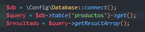
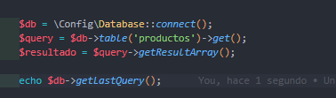
Tambien puede ser con

Sin embargo un objeto se tiene que tratar de diferente manera para poder ser impreso
Recuerda la diferencia entre
getResult(); y getResultArray();
Es la forma en la que te retorna la información
con getResultArray(); Obtenemos
La función select se utiliza para definir las columnas que quieres recuperar de una tabla en una consulta SELECT.
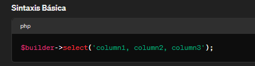

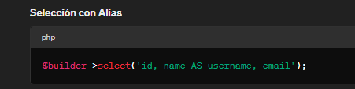
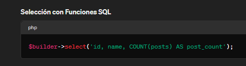
Ejemplo practico
// Conecta con la base de datos utilizando la configuración por defecto
$db = \Config\Database::connect();
// Obtiene el constructor de consultas para la tabla 'users'
$builder = $db->table('users');
// Construye una consulta SELECT para obtener los campos 'id', 'name' y 'email' de la tabla 'users'
// Añade una condición WHERE para seleccionar solo los registros donde el 'status' sea 'active'
// Ordena los resultados por el campo 'name' en orden ascendente
$query = $builder->select('id, name, email') // Define las columnas a seleccionar
->where('status', 'active') // Agrega la condición WHERE
->orderBy('name', 'ASC') // Ordena los resultados
->get(); // Ejecuta la consulta
// Ejecuta la consulta y obtiene los resultados como un array de objetos
$results = $query->getResult();
Segundo ejemplo
Consulta
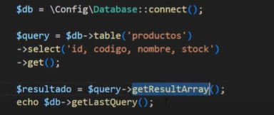
Resultado
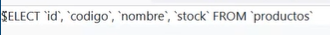
Ejemplo con 2 where y un select
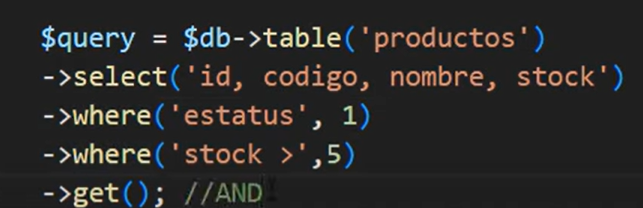
la query sería así
se puede hacer tambien de esta manera para dos filtros con un solo where se agrega un arreglo y se envia a un solo where

El resultado seria el mismo
también es verdad que se pueden agregar directamente operaciones lógicas desde el una variable string
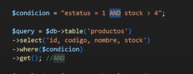
El resultado seria el mismo
La función orderBy en el Query Builder de CodeIgniter 4 se utiliza para especificar el orden en el que se deben devolver los resultados de una consulta SQL. Puedes ordenar los resultados en orden ascendente (ASC) o descendente (DESC) según una o más columnas.

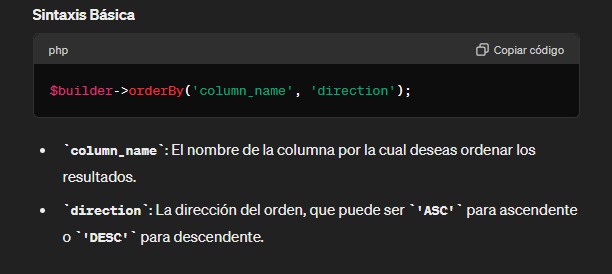

Ejemplo practico
// Conecta con la base de datos utilizando la configuración por defecto
$db = \Config\Database::connect();
// Obtiene el constructor de consultas para la tabla 'users'
$builder = $db->table('users');
// Construye una consulta SELECT para obtener los campos 'id', 'name' y 'email' de la tabla 'users'
// Añade una condición WHERE para seleccionar solo los registros donde el 'status' sea 'active'
// Ordena los resultados por el campo 'name' en orden ascendente
$query = $builder->select('id, name, email') // Define las columnas a seleccionar
->where('status', 'active') // Agrega la condición WHERE
->orderBy('name', 'ASC') // Ordena los resultados por el campo 'name' en orden ascendente
->get(); // Ejecuta la consulta
// Ejecuta la consulta y obtiene los resultados como un array de objetos
$results = $query->getResult();
La función orderBy es una herramienta esencial en el Query Builder de CodeIgniter 4 para controlar la secuencia en la que se presentan los resultados de una consulta, permitiendo ordenar de forma sencilla y eficiente.
se utiliza para restringir el número de filas devueltas por una consulta SQL. Es útil cuando necesitas paginar resultados o simplemente obtener un subconjunto específico de los datos.
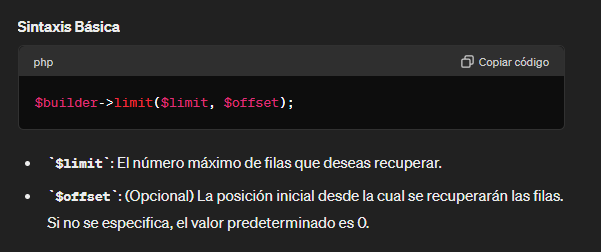
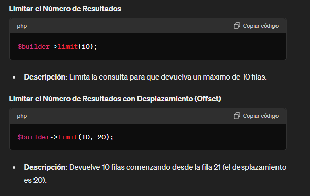
Ejemplo práctico
// Conecta con la base de datos utilizando la configuración por defecto
$db = \Config\Database::connect();
// Obtiene el constructor de consultas para la tabla 'users'
$builder = $db->table('users');
// Construye una consulta SELECT para obtener los campos 'id', 'name' y 'email' de la tabla 'users'
// Añade una condición WHERE para seleccionar solo los registros donde el 'status' sea 'active'
// Ordena los resultados por el campo 'name' en orden ascendente
// Limita los resultados a un máximo de 10 filas
$query = $builder->select('id, name, email') // Define las columnas a seleccionar
->where('status', 'active') // Agrega la condición WHERE
->orderBy('name', 'ASC') // Ordena los resultados por el campo 'name' en orden ascendente
->limit(10) // Limita los resultados a 10 filas
->get(); // Ejecuta la consulta
// Ejecuta la consulta y obtiene los resultados como un array de objetos
$results = $query->getResult();
La función limit es una herramienta esencial en el Query Builder de CodeIgniter 4 para gestionar la cantidad de datos recuperados por una consulta, proporcionando control y eficiencia en el manejo de resultados.
Ejemplo 2
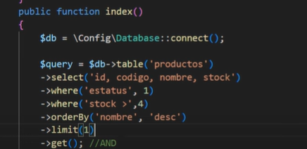

la Clase Query Builder contiene aun m,as funciones que se pueden consultar en la documentación oficial de CodeIgniter 4
aqui te mostare un resumen rapido de algunas que ya vimos y otras que uan faltan
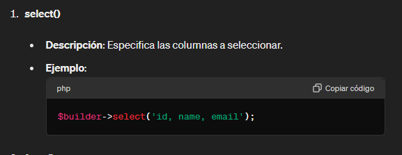


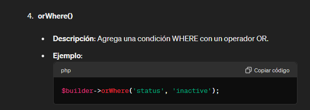
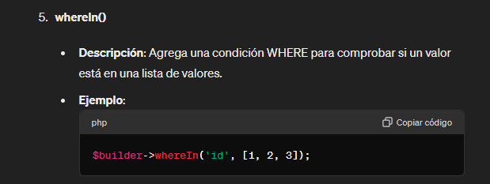


$count = $builder->where('status', 'active')->countAllResults();
$builder->set('name', 'John Doe')->set('status', 'active')->insert();
Puede que requieras hacer un join de dos tablas y que en ambas tablas existan columnas llamadas con el mismo nombre; lo que provocará posibles confusiones a la hora de interpretarse tu codigo. y por ejemplo si las dos tablas tiene una columna llamada nombre tienes que hacer uso de AS para asignar otro nombre Por ejemplo
$db = \Config\Database::connect();
$builder = $db->table('productos');
$builder->select('*');
$builder->join('almacen', 'productos.id_almacen=almacen.idalmacen');
$query = $builder->get();
$resultado = $query->getResultArray();
echo $db->getLastQuery();

con este select estamos trayendo toso los campos sin importar su nombre lo cual es malo lo ideal es que hagas realices AS cuando los nombres de las columnas se repiten de esta manera


de esta manera estamos especificando que queremos cambiar el nombre de una columna llamada nombre ya que se repite la misma columna en la otra tabla. Esto permite evitar confusiones a la hora de usar la respuesta de la query
Se guardan dentro de
app/Database/Migrations
Se pueden generar de manera automática con spark y de manera manual
De manera automática


Como podemos observar en el nombre llevan un formato de fecha y hora el cual se debe respetar ya que el framework indexa estos archivos según sus fechas,
El formato para dichas fechas es ;
Con esto el framework sabra en que orden ejecutar las migraciones
Estructura inicial
La función up sirve para crear la estructura o hacer las modificaciones y que se ejecuten en tu base de datos
La función down sirve para revertir o hacer un rollback de las modificaciones que se hagan en up
Ejemplo
<?php
// Declaración del namespace para la migración
namespace App\Database\Migrations;
// Importa la clase Migration de CodeIgniter
use CodeIgniter\Database\Migration;
// Definición de la clase CreaTablaCategorias que extiende de Migration
class CreaTablaCategorias extends Migration
{
// Método up para crear la tabla 'categorias'
public function up()
{
// Define los campos de la tabla 'categorias'
$this->forge->addField([
// Campo 'id', entero, con auto incremento
'id' => [
'type' => 'INT', // Tipo de dato entero
'constraint' => 11, // Longitud del campo
'auto_increment' => true, // Auto incremento
],
// Campo 'nombre', tipo varchar, longitud 100
'nombre' => [
'type' => 'VARCHAR', // Tipo de dato cadena de texto
'constraint' => 100, // Longitud máxima de 100 caracteres
]
]);
// Define la clave primaria de la tabla
$this->forge->addKey('id', true); // 'id' como clave primaria
// Crea la tabla 'categorias' con los campos definidos
$this->forge->createTable('categorias');
}
// Método down para eliminar la tabla 'categorias'
public function down()
{
// Elimina la tabla 'categorias' si existe
$this->forge->dropTable('categorias');
}
}
?>
Es posible ejecutar una Migracion desde un controlador con uso de una variable y un Try Catch
Ejemplo
<?php
// Declaración del namespace para el controlador
namespace App\Controllers;
// Definición de la clase Home que extiende de BaseController
class Home extends BaseController
{
// Método index que será el punto de entrada cuando se accede al controlador
public function index()
{
// Carga el servicio de migraciones de CodeIgniter
$migrate = \Config\Services::migrations();
try {
// Intenta ejecutar las migraciones hasta la versión más reciente
$migrate->latest();
} catch (\Throwable $e) {
// Si ocurre una excepción, la captura y la muestra
echo $e;
}
}
}
?>
En este ejemplo se llama al servicio de migraciones y se ejecuta el método latest() que ejecuta la última migración disponible.
<?php
namespace App\Database\Migrations; // Define el espacio de nombres para la migración
use CodeIgniter\Database\Migration; // Importa la clase Migration de CodeIgniter
class CreaTablaCategorias extends Migration // Define una nueva clase que extiende la clase Migration
{
public function up() // Método que se ejecuta al aplicar la migración
{
$this->forge->addField([ // Añade campos a la tabla utilizando el objeto forge
'id' => [ // Define un campo 'id'
'type' => 'INT', // El tipo de dato es entero
'constraint' => 11, // El tamaño del campo es 11
'auto_increment' => true, // El campo es auto-incremental
'unsigned' => true, // El campo no permite valores negativos
],
'nombre' => [ // Define un campo 'nombre'
'type' => 'VARCHAR', // El tipo de dato es cadena de texto
'constraint' => 100, // El tamaño máximo es 100 caracteres
],
]);
$this->forge->addKey('id', true); // Establece 'id' como clave primaria
$this->forge->createTable('categorias'); // Crea la tabla 'categorias'
}
public function down() // Método que se ejecuta al revertir la migración
{
$this->forge->dropTable('categorias'); // Elimina la tabla 'categorias'
}
}
Esta migración añade una nueva columna descripcion a la tabla categorias.
<?php
namespace App\Database\Migrations; // Define el espacio de nombres para la migración
use CodeIgniter\Database\Migration; // Importa la clase Migration de CodeIgniter
class AgregaDescripcionACategorias extends Migration // Define una nueva clase que extiende la clase Migration
{
public function up() // Método que se ejecuta al aplicar la migración
{
$fields = [ // Define un array de campos para añadir a la tabla
'descripcion' => [ // Define un campo 'descripcion'
'type' => 'TEXT', // El tipo de dato es texto
'null' => true, // Permite valores nulos
],
];
$this->forge->addColumn('categorias', $fields); // Añade el campo 'descripcion' a la tabla 'categorias'
}
public function down() // Método que se ejecuta al revertir la migración
{
$this->forge->dropColumn('categorias', 'descripcion'); // Elimina el campo 'descripcion' de la tabla 'categorias'
}
}
Cuando utilizas migraciones

En tu base de datos se te genera una tabla llamada migrations para regresar a migraciones anteriores puedes utilizar en un controlador el comando

esto te regresará a una migración anterior
con este comando ejecutas todas tus migraciones hasta la ultima o la mas reciente
Tambien es posible elegir a que migracion quieres egresar tu base de datos
esto con ayuda de la tabla migratios que se genera sola cuando utilizas una migraciones
con la columna batch y el comando

siendo el 1 el numero de batch
si quieres regresar todas las migraciones puedes omitir poner -b (numerode batchs es decir)

Se utilizan para agregar grandes cantidades de información
los seeders son herramientas poderosas para poblar tu base de datos con datos de prueba. Estos scripts te permiten insertar rápidamente datos iniciales en tus tablas de base de datos, lo que es útil durante el desarrollo y las pruebas.
Los seeders en CodeIgniter 4 siguen el principio de "sembrar" datos, donde creas archivos PHP dedicados que contienen métodos para insertar datos en tus tablas. Puedes crear múltiples archivos de seeder para diferentes tablas o incluso para diferentes tipos de datos.
Una vez que hayas escrito tus seeders, puedes ejecutarlos usando la CLI de CodeIgniter para insertar los datos en tu base de datos. Esto facilita la creación y la gestión de datos de prueba, lo que a su vez acelera el proceso de desarrollo y pruebas de tu aplicación.
La carpeta contenedora de seeders por defecto en codeigniter es
app/Database/Seeds
Con ayuda de SPARK podemos ingresar el comando
php spark make:seeder NombreDelSeeder
<?php
namespace App\Database\Seeds; // Define el namespace para la clase CategoriasSeeder en el directorio App\Database\Seeds.
use CodeIgniter\Database\Seeder; // Importa la clase Seeder del namespace CodeIgniter\Database.
class CategoriasSeeder extends Seeder // Declara la clase CategoriasSeeder que extiende de Seeder.
{
public function run() // Define el método run que se ejecutará al correr el seeder.
{
$dta = [ // Define un array asociativo con los datos de la categoría a insertar en la base de datos.
'nombre' => 'bebidas', // Asigna el valor 'bebidas' a la clave 'nombre'.
];
$this->db->table('categorias')->insertBatch($dta); // Inserta los datos de la categoría en la tabla 'categorias' de la base de datos.
}
}
Desde un controlador se instancia y se llama al metodo call

Desde CLI
En CodeIgniter 4, los "helpers" son funciones globales que pueden ser utilizadas en todo el sistema sin necesidad de cargar una instancia de clase específica. Estas funciones son útiles para realizar tareas comunes de forma rápida y sencilla en tus aplicaciones. Los helpers están diseñados para proporcionar funcionalidades básicas que son necesarias en muchos proyectos web.
Algunos ejemplos de helpers en CodeIgniter 4 incluyen funciones para trabajar con arrays, strings, URLs, formularios, archivos, fechas, y más. Por ejemplo, puedes encontrar helpers como url_helper para generar URLs de forma dinámica, form_helper para crear y validar formularios, file_helper para trabajar con archivos, entre otros.
Puedes cargar un helper específico en tu controlador, modelo o vista utilizando el método helper() de la clase CodeIgniter\Functions\Functions. Por ejemplo:
helper('url'); // Carga el helper url_helper
// Ahora puedes usar las funciones del helper en cualquier parte del código
echo base_url('controlador/metodo');